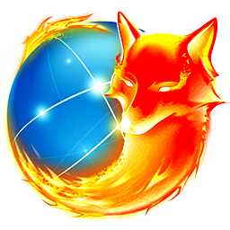

|  | Firefox | Mozilla Firefox é um navegador livre e multi-plataforma desenvolvido pela Mozilla Foundation com ajuda de centenas de colaboradores. A intenção da fundação é desenvolver um navegador leve, seguro, intuitivo e altamente extensível |
|---|---|---|
| Chrome | O Google Chrome é um navegador de internet, desenvolvido pela companhia Google com visual minimalista. | |
 |
Internet Explorer | Internet Explorer é uma série de navegadores web gráficos desenvolvidos pela Microsoft e inclusos como parte da linha de sistemas operacionais Microsoft Windows, iniciado em 1995. |
 |
Safari | O Safari é um navegador desenvolvido pela Apple Inc. e incluído como o navegador padrão a partir do sistema operacional Mac OS X v10.3 (Panther). Apresenta uma interface simples, característica dos produtos da Apple. |
| Nestscape | Netscape Navigator é um navegador web proprietário que foi o principal produto da Netscape Communications Corporation até 2002. |
Fonte: Wikipedia